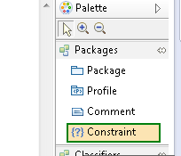
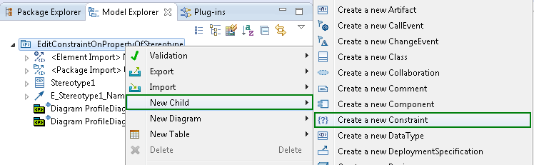
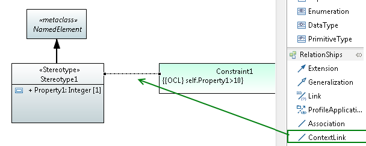
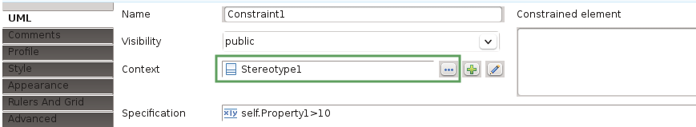
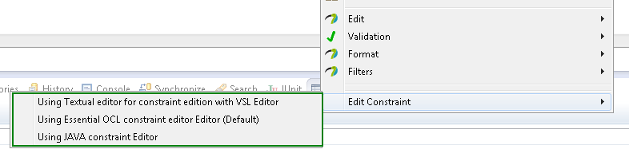
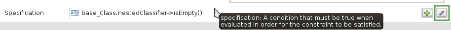
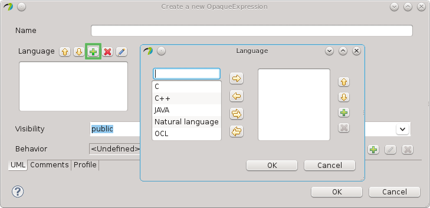
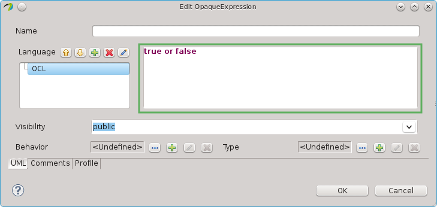

Create and edit constraints
Create constraints
Do one of the following
- Within a Papyrus diagram:
All Papyrus diagrams support constraints. Select the constraint tool from the palette.

Then, press the mouse button at the place where you want to create the constraint and resize the constraint while holding the mouse button down.
- Within the model explorer:
From the model explorer, click right --> new child--> Create a new Constraint

Specify the context
Before editing a constraint body, it is important to specify the context of a constraint;
it can be for instance a stereotype or an operation (in fact, it can be any meta-model
element that inherits from namespace).
Do one of the following
- Use the context-link-tool to create a visual link to the context element
(Papyrus selects the context-link-tool automatically after creation of a constraint): if in two-click-mode
(connection tool preference), target the context-line towards the context element and click. If you are in
one-click-mode, press mouse button on the constraint and keep it pressed until the context object is targeted.

- Use the property view to select the context via a dialog popup

Define constraint specification
Each constraint has a specification containing a condition. Whereas it may be an arbitrary value specification,
such as a StringExpression or LiteralInteger, it is in most cases useful to define an opaque expression consisting
of a pair of language and body (a list of these pairs). The constraint body may be written into OCL, JAVA,
or natural language. In order to make constraints usable by the Papyrus,
constraint must be written in OCL or JAVA.
Select a constraint in a diagram or model explorer. Then do one of the following to edit a specification
- Open the default editor for constraints using the keyboard shortcut F2
or with a second click on an already selected constraint. All editors are using opaque expressions and support
a specific language. This language is configured automatically within the opaque expression, the user edits
directly the body.
The default editor can be controlled via the preferences.
- Select a specific editor via the context menu, as shown in the following screenshot.

Explicitly choose the editor for the constraint
- Use the property view to create a new or open an existing specification, as shown in the following figure.
In the sequel, we assume that the specification is an opaque expression.

Open the specification via the property view
You can add the language, as in the following figure:

Specify a language.

Write the body of the opaque expression
This method is a bit more complicated, but gives the user full control over the opaque specification. In particular,
it is possible to enter more than one language, body pair (even if this is rarely needed).